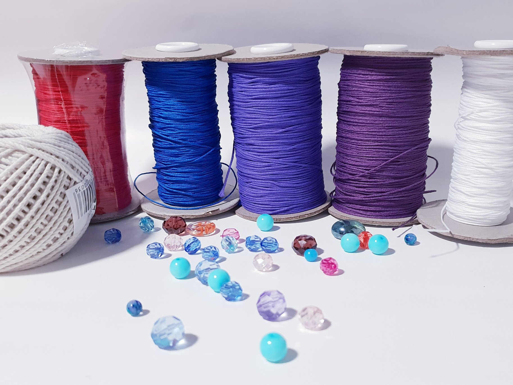
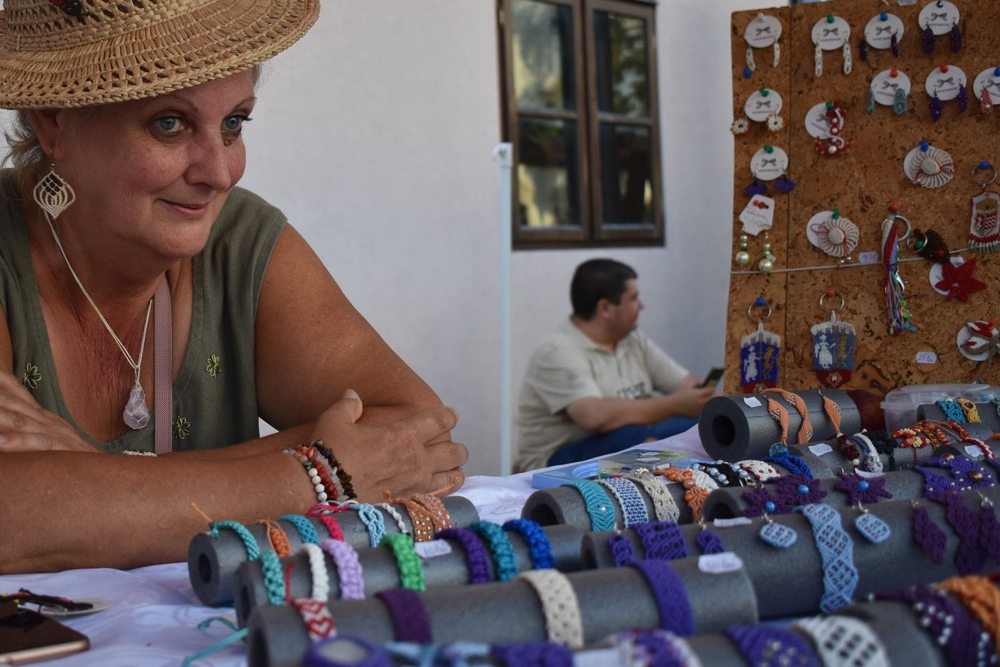

Salut si bun venit pe pagina mea!
Creez bijuterii si accesorii cu tehica Macrame atat pentru doamne si domnisoare cat si pentru domni.
Materiale pe care le folosesc sunt fire de bumbac, snur cerat, ata de cusut, margele, pietre semipretioase si elemente de metal fara nichel.
Pun suflet in fiecare bijuterie pe care o creez si sper ca macar una dintre creatiile mele sa va fie pe plac.
Macrameul este o arta veche care imbina mai multe tipuri de noduri.
Poate fi folosita pentru coliere, cercei, bratari, brose, martisoare, posete si borsete, curele, perdele, decoratiuni si multe altele.
Rezultatul perfect necesita multa atentie, rabdare si perseverenta.
Sunt pasionata de lucru manual si imi dezvolt abilitatile in acest domeniu de aproximativ 10 ani.
Permanent ma straduiesc sa imi diversific gama de produse cu modele si culori noi.
Va astept la targurile locale din Oradea sa posvestim mai multe.
Cu drag,
Eva